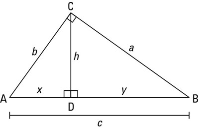
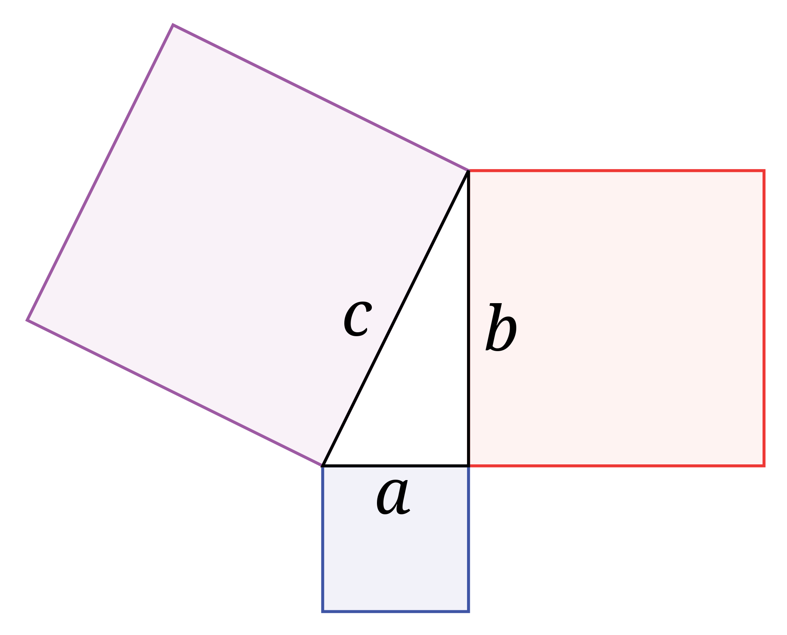
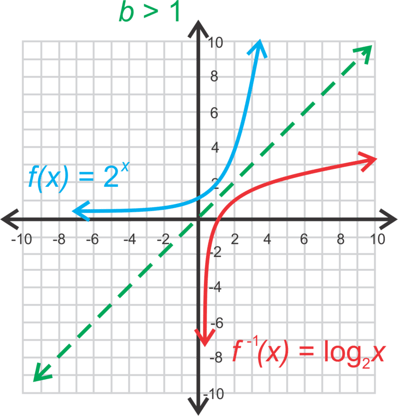
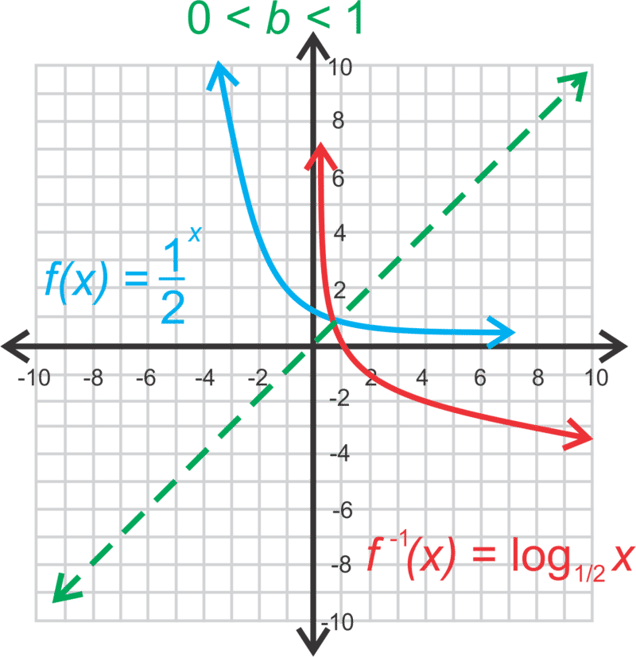
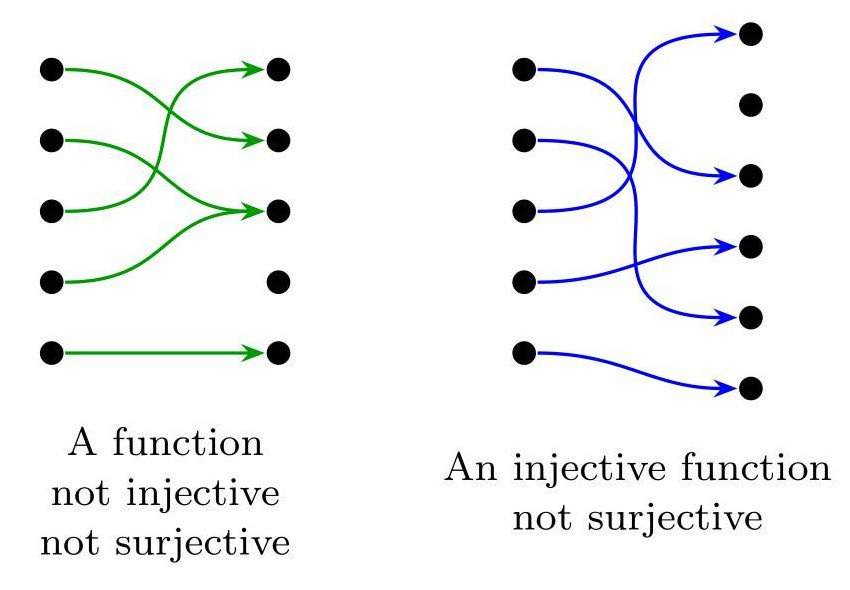
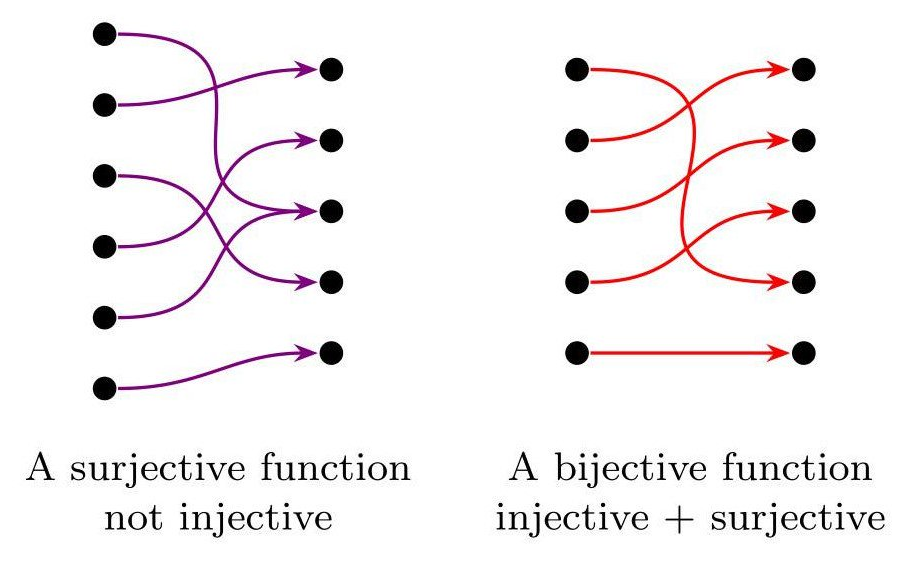
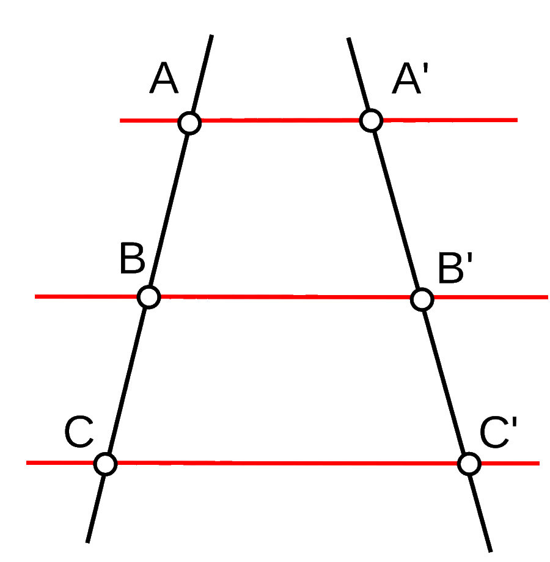

Dado un punto \(O\), y una distancia \(r\), la circunferencia está definida por el conjunto (infinito) de todos los puntos en el plano que están a una distancia \(r\) de \(O\). Un círculo corresponde a la circunferencia junto con la región inscrita dentro de ella.
Ángulo de Centro: Vértice en el centro, sus lados son dos radios.
Ángulo Interior: Vértice dentro de la circunferencia (no en ella!), sus lados son dos cuerdas.
Ángulo Exterior: Vértice fuera de la circunferencia, sus lados son dos secantes, una secante y una tangente, o dos tangentes.
Angulo Inscrito: Vértice en la circunferencia, los lados son dos secantes o cuerdas.
Ángulo semiinscrito: Vértice en la circunferencia, un lado secante y otro tangente.
Con \(\angle ACB\) inscrito y \(\angle AOB\) de centro, \(\measuredangle ACB = \frac{\measuredangle AOB}{2}\).
Análogamente, con \(\angle ABC\) semiinscrito (tangente), y \(\angle BOC\) de centro, \(\measuredangle ABC = \frac{\measuredangle BOC}{2}\).
La medida de un ángulo interior es igual a la semisuma de las medidas angulares (de centro) de los arcos formados por dicho ángulo: \[\measuredangle APB = \frac{m(\stackrel\frown{AB}) + m(\stackrel\frown{CD})}{2}\] Con \(\angle APB\) interior, y \(\stackrel\frown{AB}\) y \(\stackrel\frown{CD}\) arcos formados por el.
De la misma forma, la medida de un ángulo exterior es igual a la semidiferencia de los ángulos de centro formados por el ángulo. (mayor primero) \[\measuredangle APB = \frac{m(\stackrel\frown{AB}) - m(\stackrel\frown{CD})}{2}\]
Teorema de las Cuerdas
Teorema de las Secantes
Teorema de Secante-Tangente
\[\begin{gathered} z = a + bi \text{ con } i = \sqrt{-1}\\ \mid z \mid = \sqrt{a^2 + b^2}\\\end{gathered}\]
Se denominan cuerpos o sólidos de revolución a aquellos objetos geométricos que pueden obtenerse mediante la rotación de una figura plana alrededor de una recta denominada eje. (en un espacio tridimensional, e.j un cilindro recto por rotación de un rectángulo, una esfera por un semicirculo, un cono por un triángulo rectángulo y un cono truncado por un trapecio rectángulo.)
Por el otro lado, un cuerpo de traslación es uno obtenido mediante la traslación de una figura plana. (e.j el prisma recto, generado por un polígono trasladado perpendicular a su plano; el cilindro recto generado por la traslación de un círculo).
Un prisma es un cuerpo geométrico con dos caras paralelas y congruentes llamadas bases, con la restantes caras laterales siendo paralelogramos. Se nombran según los polígonos de sus bases.
\[\begin{gathered}
A_{\text{lateral}} = h \cdot P_b\\
A_{\text{total}} = 2\cdot A_b + A_l\\
V = A_b\cdot h\end{gathered}\]
Las pirámides son cuerpos que tienen como base un polígono cualquiera y sus caras laterales concurren en un punto llamado cúspide. Se nombran según el polígono de su base.
\[\begin{aligned}
V = \frac{1}{3}A_b\cdot h
\end{aligned}\]
El cilindro recto es el cuerpo generado al girar un rectángulo en torno a la recta que contiene a uno de sus lados, o bien al traslador un círculo de forma perpendicular a un plano que contiene la base. Este cuerpo queda limitado por una superficie curva llamado manto (label) y dos supericies planas circulares, llamadas bases.
\[\begin{gathered} A_{\text{lateral}} = 2\pi rh\\ A_{\text{basal}} = \pi r^2\\ A_{\text{total}} = 2\pi rh + 2\pi r^2 \equiv 2\pi r(h+r)\\ V = \pi r^2h\end{gathered}\]
Un cono recto es el cuerpo generado al girar un triángulo rectángulo en torno a la recta que contiene uno de sus catetos. La hipotenusa de tal triángulo se llama generatriz. (\(g\))
\[\begin{split} &g = \sqrt{r^2 + h^2}\\ A_{\text{total}} &= A_b + A_l = \pi r^2 + \pi rg \\ &= \pi r(r + \sqrt{r^2 + h^2}) \end{split}\] \[\begin{aligned} V = \frac{1}{3}\pi r^2h \end{aligned}\]
La esfera es el cuerpo generado al girar un semicírculo en torno a la recta que contiene al díametro. También puede ser descrito como un conjunto de todos los puntos en el espacio cuya distancia a un punto fijo, llamado centro, es menor o igual a su radio.
\[\begin{split} A &= 4\pi r^2\\ V &= \frac{4}{3} \pi r^3 \end{split}\]
\[\begin{gathered} 0,\overline{1} = \frac{1}{9}\\ 0,\overline{36} = \frac{36}{96}\\ 1,23\overline{4} = \frac{1234 -123}{900}\\\end{gathered}\]
El dominio de definición de una función es el conjunto de valores de entrada, o argumentos, para la cual una cierta función está definida. Análogamente, el conjunto de valores de salida, es denominado rango o imagen, que es un subconjunto del codominio de la función. Gráficamente, el dominio está representado por el eje x de un plano cartesiano, y el rango por el eje y.
Para una función \(f: X \rightarrow Y\), donde el conjunto \(X\) es el dominio, e \(Y\) el codominio, el rango está definido por \(\left\{ f(x) | x \in X \right\}\), y siempre es un subconjunto de \(Y\). Cuando el rango es todo el conjunto del codominio, la función es sobreyectiva.
El rango también se puede encontrar en el dominio de la función inversa, es decir, invirtiendo la variable independiente con la dependiente, y resolviendo el dominio.
\[\begin{gathered} a < b \rightarrow -a > b\\ a < 0 \rightarrow -a > 0\\ |x - y| = |y - x|\\ a < b \land c < b \rightarrow b + d > a + c\\\end{gathered}\]
\((a \pm b \pm c)^2 = a^2 + b^2 + c^2 \pm 2ab \pm 2ac \pm 2bc\)
\((a \pm b)^3 = a^3 \pm 3a^2b + 3ab^2 \pm b^3\)
\(a^3 \pm b^3 = (a \pm b)(a^2 \mp ab + b^2)\)
\((x + p)(x + q) = x^2 + x(p + q) + pq\)
\(a (a + b + 1) = a^2 + ab + a\)
Una función afin tiene una forma principal de \(y = mx + n\), donde se denomina lineal si \(n=0\), y una forma general de \(ax + by = 0\).
Para la forma general, \(m = -\frac{a}{b}\) y \(n = -\frac{c}{b}.\)
Punto pendiente: \(y - y_1 = m(x - x_1)\)
Dos Puntos: \(\frac{y-y_1}{x-x_1} = \frac{y_2-y_1}{x_2-x_1}\)
Distancia punto-recta: \(\frac{|ax_0+by_0+c|}{\sqrt{a^2+b^2}}.\)
Nota: \(m = \tan \alpha\)
Formatos:
\(f(x) = a x^2 + b x + c \,\!\) llamada forma estándar
\(f(x) = a(x - r_1)(x - r_2)\,\!\), llamada forma factorizada, con \(r_1\) y \(r_2\) raíces.
\(f(x) = a(x - h)^2 + k \,\!\), llamada forma de vértice, con un vértice \((h, k)\).
Vértice: \((\frac{-b}{2a}),(-\frac{b^2-4ac}{4a})\)
\(x_1 + x_2 = \frac{-b}{a}\)
\(x_1 \cdot x_2 = \frac{c}{a}\)
Una función exponencial usualmente está descrita en la forma \((x) = ab^x\) con b un número real positivo y \(x\) exponente. De forma simplificada \(f(x) = b^x\), donde si \(b > 1\) la función es creciente (hacia la derecha) y cuando \(0 < b < 1\) la función es decreciente.
Se dice que dos ángulos son congruentes si tienen la misma medida.
De la misma forma, dos segmentos de recta son congruentes si miden lo mismo. Por extensión, dos figuras planas son llamadas congruentes si tienen exactamente la misma forma y tamaño, es decir, si y solo si, todos sus ángulos interiores y lados son congruentes entre sí. En este contexto, entre dos figuras, los vértices, lados y ángulos que coinciden (homologamente) son llamados correspondientes. La congruencia entre objetos se denota "\(\cong\)".
Por el otro lado, dos figuras son semejantes (\(\sim\)) si tienen la misma forma, pero no necesariamente el mismo tamaño (la congruencia es una clase de semejanza), es decir, si todos sus ángulos interiores correspondientes son iguales y la razón entre las medidas de sus lados es constante.
Criterios de Congruencia Lado, Lado, Lado (LLL): Todos los lados respectivos son congruentes entre ellos. Lado, Ángulo, Lado (LAL): Dos lados respectivos son congruentes, al igual que el ángulo comprendido entre ellos. Ángulo, Lado, Ángulo (ALA): Dos ángulos respectivos son congruentes, al igual que el lado entre ellos.
Criterios de Semejanza Ángulo, Ángulo (AA o AA): Todos los ángulos son iguales entre ellos (con dos basta por las propiedades de un triángulo). Lado, Ángulo, Lado (LAL): Dos lados tienen medidas proporcionales y los ángulos comprendidos entre ellos son congruentes. Lado, Lado, Lado (LLL): Todos los lados correspondientes son proporcionales, es decir hay una constante para la relación entre cada par de lados.
Teorema de Euclides
En un triángulo rectángulo, la altura de la hipotenusa divide al triángulo en dos triángulos semejantes entre ellos, al igual que semejantes al triángulo original. De esto se deriva que el cuadrado de tal altura es igual al producto entre las protecciones de los catetos sobre la hipotenusa:  \[{h_c}^2 = x \cdot y\] También de esto se deriva que el cuadrado de un cateto es igual al producto de la hipotenusa y su proyección del cateto.
\[a^2 = c \cdot y; b^2 = c \cdot x\] Teorema de Pitagoras
En un triángulo rectángulo, el área del cuadrado construido sobre la hipotenusa es igual a la suma de las áreas de los cuadrados sobre los catetos. 
De esto deriva la ecuación pitagórica: \[a^2 + b^2 = c^2\] Es importante notar que esta es un teorema recíproco, es decir, cuando esta ecuación se cumple en un triángulo dado se puede afirmar que es rectángulo.
Siguen la forma general \(f(x) = log_b{x}\), y son inversas de las funciones exponenciales, siendo simétricas con respecto a \(y = x\).
 \ 
Clase de la que pertenece la función cuadrática, está definida en forma general por \(f(x) = ax^n\) con \(n \in \mathbb{N} - \{1\}\) y \(a \in \mathbb{R}\). Cuando \(n\) es par, entonces la función toma la forma de una parábola, y cuando es impar, toma una forma similar a la cúbica.
Interés Simple: \(C_f = C_i(1+n\cdot i\%)\)
Interés Compuesto: \(C_f = C_i (1 + i \%)^n\)
Con \(C_i\) capital inicial, \(C_f\) capital final, \(i\%\) tasa de interés y \(n\) el número de periodos.
Advertencia: Es clave convertir los períodos de tiempo si es necesario (e.j \(1\) año \(= 12\) meses)
Una función \(f(x)\) es inyectiva cuando, \(\forall a,b \in X, \;\; f(a)=f(b) \Rightarrow a=b\) , es decir cuando nunca mapea elementos distintos de su Dominio a un mismo elemento del Codominio.
Análogamente, se dice que una función f(x) es sobreyectiva, o epiyectiva cuando, \(\forall y \in Y, \, \exists x \in X, \;\; f(x)=y\), es decir, que para cada elemento \(y\) en el codominio \(Y\), hay al menos un elemento \(x\) en el dominio \(X\) de forma que \(f(x) = y\).


\(\log_b(x) = y \quad \leftrightarrow \quad b^y = x.\)
\(\log_b(xy) = \log_b x + \log_b y\)
\(\log_b \!\frac{x}{y} = \log_b x - \log_b y\)
\(\log_b\left(x^p\right) = p \log_b x\)
\(\log_b \sqrt[p]{x} = \frac{\log_b x}{p}\)
\(\log_b x = \frac{\log_k x}{\log_k b}\)
\(\log_b \frac{1}{x} = -\log_b x\)
MCM (mínimo común múltiplo): menor Nº entero positivo que es divisible por cada uno de los números (sin resto).
MCD (máximo común divisor): mayor Nº entero positivo que divide cada uno de los números (sin resto).
\((-a)^2 = a^2; -a^2 = -(a^2)\)
\(b^{m + n} = b^m \cdot b^n \left(b^m\right)^n = b^{m \cdot n} (b \cdot c)^n = b^n \cdot c^n\) \(0^0 \notin \mathbb{R}\)
No son conmutativas (e.j \(2^3 = 8 \neq 3^2 = 9\)) ni asociativas (e.j \((2^3)^4) = 8^4 \neq 2^{(3^4)} = 2^{81}\)).
Sin paréntesis el orden de operación es de arriba hacia abajo (o dextro-asociativo):
\(b^{p^q} = b^{\left(p^q\right)} \not\equiv \left(b^p\right)^q = b^{p q}\)
Proporcionalidad Directa: (lineal)
\[y = kx \leftrightarrow y \propto x \text{ con } k = \frac{y}{x}\]
Proporcionalidad Inversa: (híperbola rectangular)
\[y = \frac{k}{x} \leftrightarrow k = xy\]
\(a ^ {\frac{p}{q}} \equiv \sqrt[q]{a^p}\)
\(\sqrt[p]{a^q} \equiv (\sqrt[p]{a})^q\)
\(\sqrt{x^2} = \mid x \mid\)
\(\sqrt[p]{\sqrt[q]{a}} = \sqrt[pq]{a}\)
Para radicandos \(a, b\) positivos: \(\sqrt[n]{ab} \equiv \sqrt[n]{a} \sqrt[n]{b}\)
\(\sqrt[n]{\frac{a}{b}} \equiv \frac{\sqrt[n]{a}}{\sqrt[n]{b}}\)
Sutilezas con radicandos negativos: \(\sqrt{-1}\times\sqrt{-1} \neq \sqrt{-1 \times -1} = 1,\quad\) sino \(\quad\sqrt{-1}\times\sqrt{-1} = i \times i = i^2 = -1.\)
Un conjunto de puntos son llamados colineales si pertenecen a una misma recta, lo que puede ser verificado por la igualdad constituida entre las pendientes entre cada par. En álgebra lineal, también se puede verificar comprobando si el área del polígono formado entre los puntos es cero. Trivialmente, todo par de puntos en un plano son colineales, ya que forman una línea.
Dos rectas en un mismo plano son llamadas coincidentes si están constituidas por el mismo conjunto de puntos, paralelas si no tienen ningún punto en común (igual pendiente), secantes si solo se intersectam en un punto y perpendiculares si forman entre ellas ángulos rectos (\(m_1 \cdot m_2 = -1\)).
Si dos o más rectas paralelas se intersectan por dos transversales, entonces las medidas de los segmentos determinados sobre las secantes son proporcionales.

Establece que un segmento de recta paralelo a un lado de un triángulo y que corta a los otros dos, determina en estos últimos segmentos proporcionales. Es importamente mencionar de que el teorema es recíproco.
Una recta puede ser expresada en la forma de una ecuación vectorial donde se encuentra definida por un punto de ella, y su dirección. Cualquier vector con la misma dirección (ángulo o pendiente) con respecto a la recta, es llamado vector director (\(\vec{d}\)), y asimismo un vector de un punto P perteneciente a la recta, es llamado vector de posición (\(\vec{P_0}\)).
De esta forma, la ecuación vectorial de la recta está dada por:
\(\vec{p} = \vec{p_0} + \lambda\vec{d}\), donde \(\lambda \in \mathbb{R}\) y \(\vec{p}\) es un vector representando cualquier punto en la recta.
Al resolver la forma general tal que quede expresada en un solo vector, se pueden generar un conjunto de ecuaciones paramétricas (con parámetro \(\lambda\)) que determinan la recta a través de cada una de sus componentes (como se expresan en el vector resultante).
En el plano, la ecuación vectorial puede ser expresada como:
\[(x, y) = (x_0, y_0) + \lambda(d_x,d_y) \text{ con } \lambda \in \mathbb{R}\]
Y paramétricamente: Teniendo una ecuación paramétrica, podemos despejar el parámetro (\(\lambda\)) en cada uno, y despues igualar las expresiones equivalentes del parámetro para obtener una ecuación continua de la forma: \[\begin{split} \lambda &= \frac{x - x_0}{d_x}\\ \lambda &= \frac{y - y_0}{d_y}\\ \frac{x-x_0}{d_x} &= \frac{y-y_0}{d_y} \end{split}\]
Un sistema de ecuaciones lineales o sistema lineal es una colección de dos o mas ecuaciones lineales (nótese, uso no análogo a afín/lineal) que involucra el mismo conjunto de variables. Una solución a tal sistema es una asignación de valores a las variables de forma de que todas se encuentren satisfechas.
Un sistema de ecuaciones lineales con dos incógnitas y dos ecuaciones pueden representarse como dos rectas en el plano, con sus respectivas intersecciones correspondiendo a las soluciones al sistema. Nota: Para tres variables, cada ecuación linear determina un plano en espacio tridimensional, y para n variables, cada ecuación lineal determina un hiperplano (un subespacio con una dimensión una menor que la de su espacio) en un espacio n-dimensional.
Según la cantidad de soluciones, un sistema de ecuaciones lineales (en este caso. \(2\times2\)) puede ser clasificado en:
Compatible determinado: Una solución, es decir, las rectas son secantes entre ellas (un punto de intersección).
Compatible indeterminado: Infinitas soluciones, es decir, las rectas son coincidentes.
Incompatible: Ninguna solución, ocurre cuando las rectas son paralelas (igual pendiente).